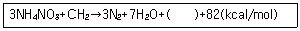
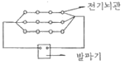
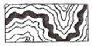
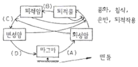
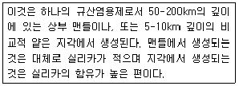
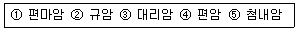
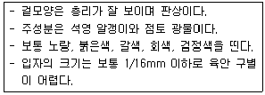

화약취급기능사 (2009-01-18 기출문제)
1과목: 화약 및 발파
1. 탄광용 폭약의 감열소염제로 주로 쓰이는 것은?
- 알루미늄
- 염화나트륨
- 염화바륨
- 질산암모늄
(정답률: 62%)

2. 다음 중 뇌관의 첨장략으로 사용되지 않는 것은?
- 테트릴(Tetryl)
- 헥소겐(Hexogen)
- 카알릿(Carlit)
- 펜트리트(Pentrite)
(정답률: 74%)
3. Hg(ONC)2는 다음 중 무엇인가?
- 초유폭익
- 피크린산
- 질화납
- 뇌홍
(정답률: 85%)
4. 니트로글리세린(NG)에 대한 설명으로 맞는 것은?
- 인체에 흡수되어도 해롭지 않다.
- 글리세린을 질산과 황산으로 처리한 무색 또는 담황색 액체이다.
- 동결온도는 -10℃이다.
- 물에 녹으나, 알콜, 아세톤에는 녹지 않는다.
(정답률: 69%)
5. 다음 중 폭약의 선정방법으로 틀린 것은?
- 강도가 큰 암석에는 동적효과가 큰 폭약을 사용한다.
- 장공발파에는 비중이 큰 폭약을 사용한다.
- 굳은 암석에는 동적효과가 큰 폭약을 사용한다.
- 고온의 막장에서는 내열성 폭약을 사용한다.
(정답률: 84%)
6. 누두공 시험에서 누두공의 모양과 크기에 영향을 미치는 요소로 틀린 것은?
- 뇌관 각선의 길이
- 암반의 종류
- 폭약의 위력 및 메지의 정도
- 약실의 위치와 자유면의 거리
(정답률: 89%)
7. 계단식 노천 발파시 암석 비산의 중요한 원인으로 가장 관련이 적은 것은?
- 단층, 균열, 연약면 등에 의한 암석의 강도 저하
- 천공시 잘못으로 인한 국부적인 장약공의 집중 현상
- 초시가 빠른 비전기식 뇌관 사용
- 정화순서의 착오에 의한 지나친 지발시간
(정답률: 70%)
8. ANFO 폭약의 폭발 반응식은 다음과 같다. ( )안에 알맞은 것은?

- O2
- NO3
- CH4
- CO2
(정답률: 74%)
9. 질산암모늄을 함유하지 않은 스트레이트 다이나마이트를 장기간 저장하면 NG와 NC의 콜로이드화가 진행되어 내부의 기포가 없어져서 다이나마이트는 둔감하게 되고 결국에는 폭발이 어렵게 된다. 이와 같은 현상을 무엇이라 하는가?
- 고화
- 노화
- 질산화
- 니트로화
(정답률: 93%)
10. 다음 중 화약의 폭발속도를 측정하는 방법이 아닌 것은?
- 도트리시법
- 메테강법
- 오실로그래프법
- 크루프식법
(정답률: 47%)
11. 전색물의 구비조건으로 틀린 것은?
- 발파공벽과의 마찰이 작을 것
- 단단하게 다져질 수 있을 것
- 재료의 구입과 운반이 쉬울 것
- 연소되지 않을 것
(정답률: 93%)
12. 다음 중 라인드릴링(line-drilling)법에 대한 설명으로 틀린 것은?
- 목적하는 파단선에 따라서 근접한 다수의 무장약공을 천공하여 인공적인 파단면을 만드는 방법이다.
- 벽면 암반의 파손이 적으나 많은 천공이 필요하므로 천공비가 많이 든다.
- 천공은 수직으로 같은 간격으로 하여야 하므로 천공 기술이 필요하다.
- 층리 절리 등을 지닌 이방성이 심한 양반구조에 가장 효과적으로 적용되는 방법이다.
(정답률: 54%)
13. 전기뇌관 12개를 그림과 같이 결선하고 재발시키려 한다. 이때 필요한 소요전압은 얼마인가? (단, 뇌관 1개 저항은 1.2[Ω], 발파모션의 총길이는 100[m], 모선의 저항은 0.02[Ω/m]이며, 소요전류는 2[A]이고 내부저항은 고려치 않는다.)

- 7.2[V]
- 17.4[V]
- 21.6[V]
- 28.8[V]
(정답률: 50%)
14. 건조단위중량이 1.70t/m3이고 비중이 2.80 인 흙의 공극비(e)는 얼마인가?
- 0.32
- 0.47
- 0.55
- 0.65
(정답률: 43%)
15. 초유폭약(AN-FO)에 대한 설명 중 틀린 것은?
- 질산암모늄과 경유를 혼합하여 제조한다.
- 발파작업시에는 반드시 전폭약포가 필요하다.
- 석회석의 채석 등 노천채굴에 적합하다.
- 흡습성이 없어 장기저장이 가능하다.
(정답률: 67%)
16. 한개의 약포가 그 옆에 있는 다른 약포의 폭굉에 의하여 반응 폭발하는 현상을 무엇이라 하는가?
- 순폭
- 기폭
- 완폭
- 불폭
(정답률: 93%)
17. 어떤 양반에 대한 시험발파에서 장약량 700g으로 누두지수=1.2인 발파가 되었다면, 동일 암반에서 같은 최소저항선으로 n=1인 표준발파가 되도록 하기 위한 장약량은?
- 395.19g
- 425.11g
- 457.82g
- 506.12g
(정답률: 72%)
18. 자유면 벤치 발파에서 다음과 같은 조건일 때 장약량은 얼마인가? (단, 최소저항선: 2m, 천공간격: 2m, 벤치높이: 3m, 발파계수: 0.15)
- 1.8kg
- 4.⑤kg
- 24kg
- 36kg
(정답률: 46%)
19. 다음 중 소할발파법에 속하지 않는 것은?
- 미진동법
- 복토법
- 사혈법
- 천공법
(정답률: 80%)
20. 반 분류방법 중 RMR 값을 산정하기 위한 주요 인자가 아닌 것은?
- 암석의 일축인장강도
- 암질 계수(RQD)
- 지하수의 상태
- 불연속면 상태
(정답률: 70%)
2과목: 화약류 안전관리 관계 법규
21. 번컷(Burn-cut)에 대한 설명이다. 틀린 것은?
- 심발공 내에 무장약공을 천공한다.
- 장약공은 메지를 하지 않고, 공 전체에 폭약을 장전한다.
- 심발공 내에 천공한 무장약공은 자유면 역할을 한다.
- 번컷(Burn-cut)은 평행공 심발공법에 해당한다.
(정답률: 67%)
22. 어느 보안물건의 허용진동기준이 0.3cm/sec이고, 시험발파과 환산거리를 65m/kg1/2로 제한하여 발파하도록 하였다. 보안물건과 이격거리 100m 지점에서 사용할 수 있는 지 당 장약량은 얼마인가? (단, 자승근 환산거리를 적용하여 계산)
- 1.15kg
- 2.37kg
- 3.00kg
- 6.50kg
(정답률: 29%)
23. kg/cm2의 수압에서 젤라틴 다이너마이트를 완전히 폭발시키기 위해 첨가해 주는 것은?
- 황산바륨
- 알루미늄
- 옥분
- 염화나트륨
(정답률: 59%)
24. 다음 중 암반사면의 파괴형태에 소하지 않는 것은?
- 평면파괴
- 취성파괸
- 쐐기파괴
- 전도파괴
(정답률: 67%)
25. 다음 중 집중발파(조합발파)의 특징으로 틀린 것은?
- 파괴암석의 분쇄가 적어진다.
- 단일발파보다 동일 장악량에 비해 많은 채석량을 얻는다.
- 파괴암석의 비산이 적다.
- 최소저항선을 감소시킬 수 있다.
(정답률: 69%)
26. 화약류운반신고를 하고자 하는 사람은 화약류운반신고서를 특별한 사정이 없는 한 운반개시 몇 시간 전까지 발송지를 관할하는 경찰서장에게 제출해야 하는가?(오류 신고가 접수된 문제입니다. 반드시 정답과 해설을 확인하시기 바랍니다.)
- 1시간
- 4시간
- 8시간
- 24시간
(정답률: 67%)
27. 화약류 취급소의 정체량으로 맞는 것은? (단, 1일 사용예정량 이하임)
- 회약 400kg 이하
- 폭약(초유폭약 제외) 400kg 이하
- 전기뇌관 3500개 이하
- 도폭선 6km 이하
(정답률: 47%)
28. 다음 중 정기안전검사를 받아야 하는 대상시설에 해당하지 않는 것은?
- 꽃불류제조소의 제조시설 중 위험공실
- 1급 화약류저장소
- 2급 화약류저장소
- 3급 화약류저장소
(정답률: 80%)
29. 총포ㆍ도검ㆍ화약류 등 단속법 위반에 의한 과태료 처분에 불복이 있는 사람은 그 처분이 있음을 안 날로부터 몇 일 이내에 관할관청에 이의를 제기할 수 있는가?
- 15일 이내
- 20일 이내
- 30일 이내
- 60일 이내
(정답률: 75%)
30. 꽃불류저장소 주위의 방폭벽은 두께 몇 cm 이상의 철근콘크리트조로 하여야 하는가?
- 10cm
- 15cm
- 20cm
- 25cm
(정답률: 60%)
31. 사용허가를 받지 아니하고 화약류를 사용할 수 있는 사람으로서 건축, 토목공사용으로 1일 동일한 장소에서 사용할 수 있는 수량으로 맞는 것은?
- 산업용 실탄 200개 이하
- 미진동 파쇄기 1500개 이하
- 광쇄기 200개 이하
- 건설용 타정총용 공포탄 5000개 이하
(정답률: 67%)
32. 양수허가의 유효기간은 얼마를 초과할 수 없는가?
- 3개월
- 6개월
- 1년
- 2년
(정답률: 82%)
33. 간이저장소의 위치ㆍ구조 및 설비의 기준으로 틀린 것은?
- 벽과 천정(2층 이상의 건물인 경우에는 그 층의 바닥을 포함한다.)의 두께는 10cm 이상의 철근 콘크리트로 할 것
- 지붕은 10cm 이상의 철근 콘크리트로 할 것
- 출입문은 두께 2mm 이상의 철판으로 2중문을 설치할 것
- 자동소화 설비를 갖출 것
(정답률: 47%)
34. “공실”에 대한 정의로 맞는 것은?
- 발화 또는 폭발할 위험이 있는 화약고 등의 시설을 하기 위한 건축물
- 화약류의 제조작업을 하기 위하여 제조소안에 설치된 건축물
- 화약류의 제조과정에서 화약류를 일시적으로 저장하는 장소
- 화약류의 취급상의 위해로부터 보호가 요구되는 건축물
(정답률: 70%)
35. 화약류를 발파 또는 연소시키려는 사람은 누구에게 사용허가를 받아야 하는가? (단, 예외사항은 제외)
- 사용지 관할 지방경찰청장
- 사용지 관할 경찰서장
- 사용지 관할 구청장
- 사용지 관할 시장
(정답률: 70%)
36. 지각을 구성하고 있는 8대 원소에 포함되지 않는 것은?
- 수소(H)
- 나트륨(Na)
- 알루미늄(Al)
- 철(Fe)
(정답률: 92%)
37. 암석이 재결정작용을 받아 운모와 같은 판상의 광물이 평행하게 배열되면 변성암은 평행구조를 나타내게 되는데 이런 구조를 무엇이라 하는가?
- 연흔
- 엽리
- 충리
- 박리
(정답률: 74%)
38. 대규모의 습곡에 작은습곡을 동반하는 다음 그림과 같은 지질구조의 명칭은?

- 침강 습곡
- 복배사, 복항사
- 횡와 습곡
- 드래그 습곡
(정답률: 54%)
39. 현무암이나 반려암보다 화강암이나 유문암에 많은 화학성분은 무엇인가?
- CaO, MgO, Fe2O3
- K2O, Na2O, SiO2
- CaO, SiO2, MgO
- FeO, K2O, Na2O
(정답률: 86%)
40. 지각 변동 때 발생하는 응력이나 앙석이 고화될 때 수축에 의해 생기는 것으로 암석에서 관찰되는 쪼개진 틈을 무엇이라 하는가?
- 습곡
- 단층
- 정합
- 절리
(정답률: 72%)
3과목: 암석 및 지질
41. 다음 그림은 암석의 윤회과정을 나타낸 것이다. A, B, C, D에 해당되는 작용은 무엇인가?

- A-결정작용, B-고화작용, C-용융작용, D-변성작용
- A-결정작용, B-고화작용, C-변성작용, D-용융작용
- A-용융작용, B-변성작용, C-결정작용, D-고화작용
- A-용융작용, B-고화작용, C-변성작용, D-결정작용
(정답률: 93%)
42. 화성암을 산성암, 중성암 및 염기성암 등으로 분류하는데 기준이 되는 화학성분은?
- K2O, Na2O
- FeO, Fe2O3
- Al2O3
- SiO2
(정답률: 94%)
43. 화산암에 있어서 마그마가 유동하면서 굳어진 구조를 무엇이라 하는가?
- 유상구조
- 다공상구조
- 행인상구조
- 구상구조
(정답률: 79%)
44. 다음 중 화학적 퇴적암으로만 나열된 것은?
- 역암, 각력암
- 셰일, 응회암
- 쳐어트, 규조토
- 석고, 암염
(정답률: 38%)
45. 지각온 화성암, 퇴적암, 변성암으로 구성되어 있는데, 변성암을 변성되기 전의 원암으로 계산할 때 지구표면 근처에는 표토를 제외하고 퇴적암과 화성암의 양적비율이 어떻게 되는가?
- 퇴적암 75% : 화성암 25%
- 화성암 75% : 퇴적암 25%
- 화성암 95% : 퇴적암 5%
- 퇴적암 95% : 화성암 5%
(정답률: 70%)
46. 다음 중 한반도에서 아직 발견되지 않고 있는 지질 시대는?
- 제3기
- 데본기
- 쥐라기
- 메룸기
(정답률: 54%)
47. 다음 중 야외에서 단층을 확인하는 증거로 사용되지 않는 것은?
- 단층점토
- 단층면의 주향ㆍ경사
- 단층각력
- 단층면의 긁힌 자국
(정답률: 79%)
48. 현정질 및 비현정질 조직에 있어서 상대적으로 유난히 큰 광물알갱이들이 반점 모양으로 들어 있는 경우 이러한 화성암의 조직은?
- 반상조직
- 구상조직
- 미정질조직
- 유리질조직
(정답률: 74%)
49. 다음에서 설명하는 것은?

- 시마(sima)
- 엘랑지
- 마그마
- 오피올라이트
(정답률: 80%)
50. 지하의 마그마가 지표에 분출하거나 지각에 관입하여 굳어진 암석은 무엇인가?
- 화성암
- 퇴적암
- 변성암
- 편마암
(정답률: 100%)
51. 다음 중 규산암 광물이 아닌 것은?
- 홍주석
- 석영
- 빙해석
- 정장석
(정답률: 31%)
52. 다음 중 엽리를 찾아보기 어려운 변성암은?
- 슬레이트
- 편암
- 편마암
- 규암
(정답률: 50%)
53. 다음 중 쇄설성 퇴적암을 분류하는데 이용되는 대표적인 기준은?
- 구성입자의 크기
- 화학성분
- 퇴적구조
- 화석의 종류
(정답률: 69%)
54. 주로 셰일로부터 변성된 접촉변성암으로서 흑색 셰립의 치밀ㆍ견고한 암석을 무엇이라 하는가?
- 대리암
- 혼펠스
- 천매암
- 편마암
(정답률: 77%)
55. 현무암질 마그마의 분화작용에 따른 암석의 생성 순서로 옳은 것은?
- 화강암→섬록암→반려암
- 섬록암→화강암→반려암
- 화강암→반려암→섬록암
- 반려암→섬록암→화강암
(정답률: 69%)
56. 다음 중 규장암에 대한 설명으로 틀린 것은?
- 간혹 석영의 반정을 가진다.
- 석물의 화석을 포함하는 경우가 많다.
- 흰색이며 비현정질의 치밀한 암석이다.
- 절리면에는 모수석(dendrite)이 생겨 있는 경우가 많다.
(정답률: 70%)
57. 다음 중 부정합면 아래에 결정질인 암석(심성암ㆍ변성암)이 있는 부정합은?
- 난정합
- 준정합
- 사교부정합
- 평행부정합
(정답률: 24%)
58. 다음 중 주향과 경사에 대한 설명으로 맞는 것은?
- 주향은 지층면과 수평면이 이루는 각이다.
- 경사는 경사된 지층면과 수평면과의 교차선의 방향이다.
- 주향은 항상 자북방향을 기준으로 측정한다.
- 경사각을 기재할 때 기울기가 50°이고 기울어진 쪽의 방향이 남동쪽이면 50° SE가 된다.
(정답률: 58%)
59. 다음 보기에서 광역변성암에 해당하는 것을 옳게 표시한 것은?

- ①,②,③
- ②,③,④
- ①,④,⑤
- ②,④,⑤
(정답률: 84%)
60. 다음과 같은 특징을 가지고 있는 퇴적암은?

- 응회암
- 석회암
- 역암
- 셰일
(정답률: 59%)